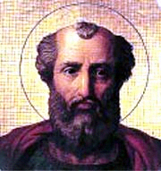

St. Dionysius
St. Dionysius (259-268) was elected pope after a delay of a year, due to persecution. We have several instances of his official exercise of authority. He convoked a council at Rome about the year 260, in which the teachings of Sabellius and the errors of the Marcionites were condemned. He summoned Bishop Dionysius of Alexandria to make profession of the orthodox faith; and Dionysius obeyed. The pope also sent money to Cappadocia to relieve the Christians there during the invasion of the Goths.
McSorley, Joseph. An Outline History of the Church by Centuries (from St. Peter to Pius XII). 2nd Ed. 1944.